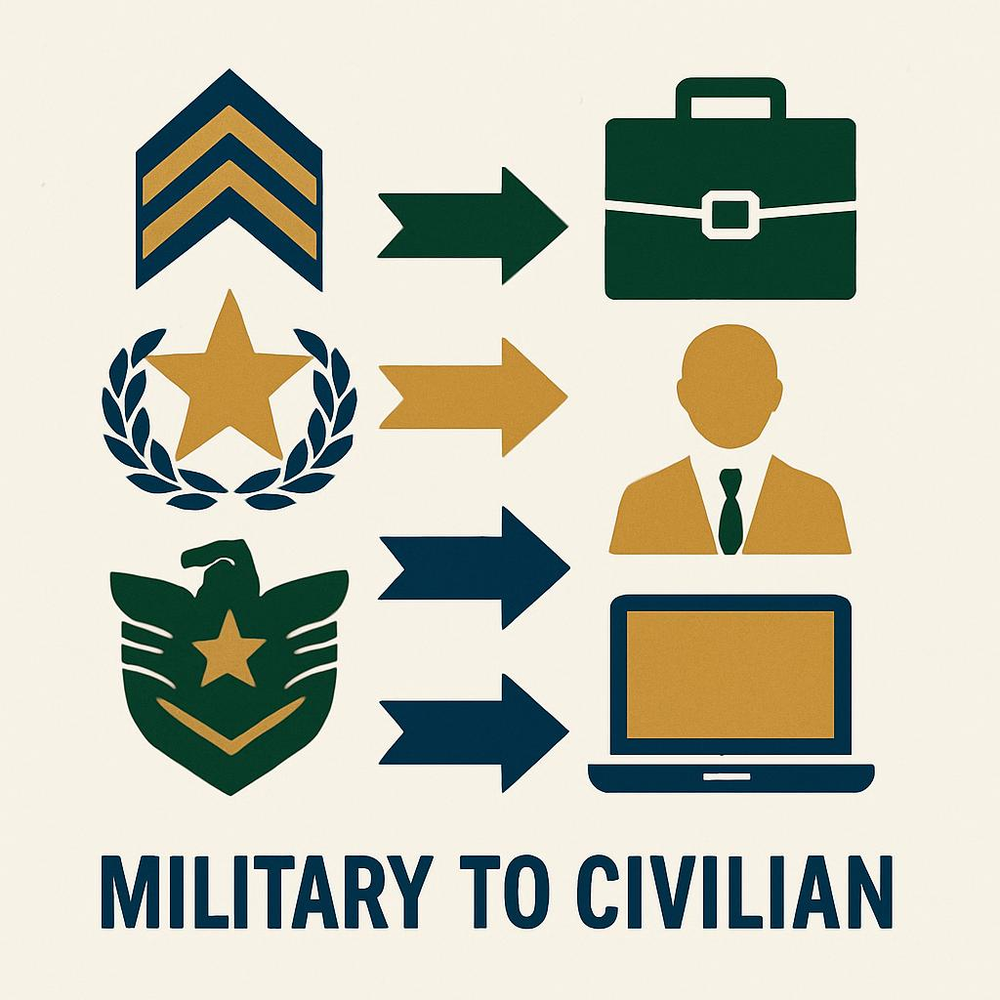
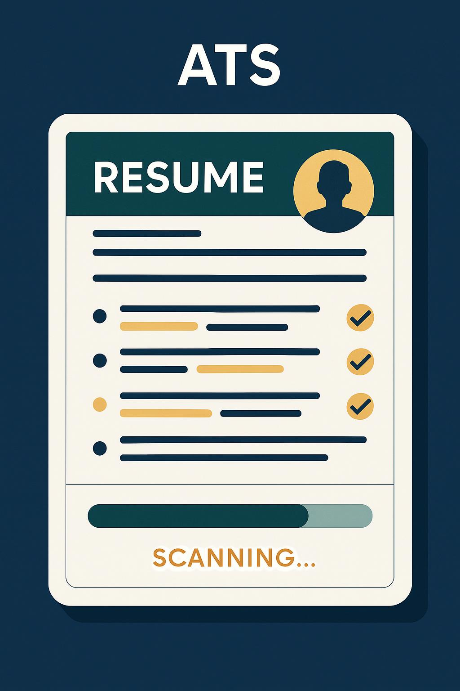
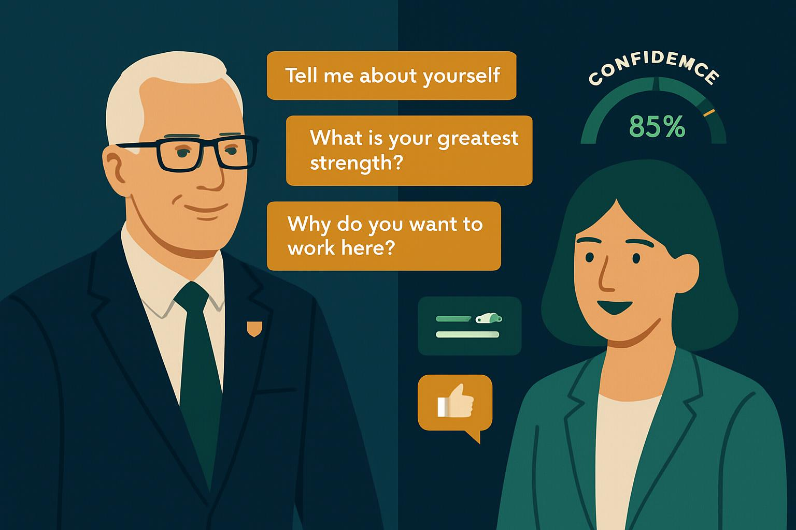

Powerful Career Tools for Veterans
Everything you need to successfully transition from military to civilian career

Skill Translator
Convert your military experience into civilian terms that employers understand and value.
- Military-to-civilian job mapping
- Transferable skills identification
- Industry recommendations

Resume Generator
Create professional, ATS-friendly resumes tailored to your target civilian roles.
- Step-by-step builder
- Military-to-civilian phrasing
- Multiple professional templates

ATS Scanner
Ensure your resume passes through Applicant Tracking Systems to reach hiring managers.
- Keyword optimization
- Format compatibility check
- Improvement suggestions

Interview Coach
Practice interviews with AI feedback to build confidence and improve your responses.
- Industry-specific questions
- Real-time feedback
- Performance analytics